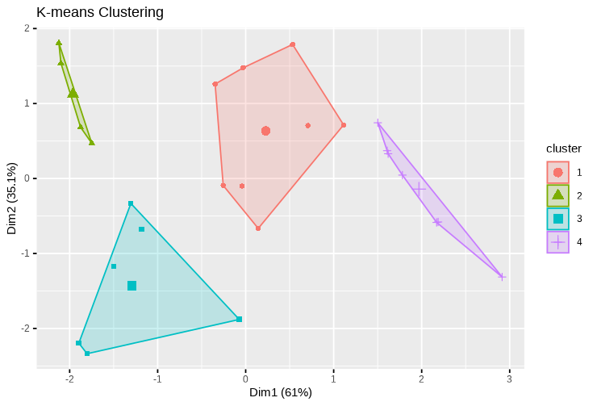
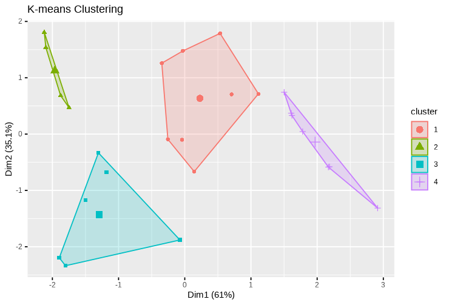
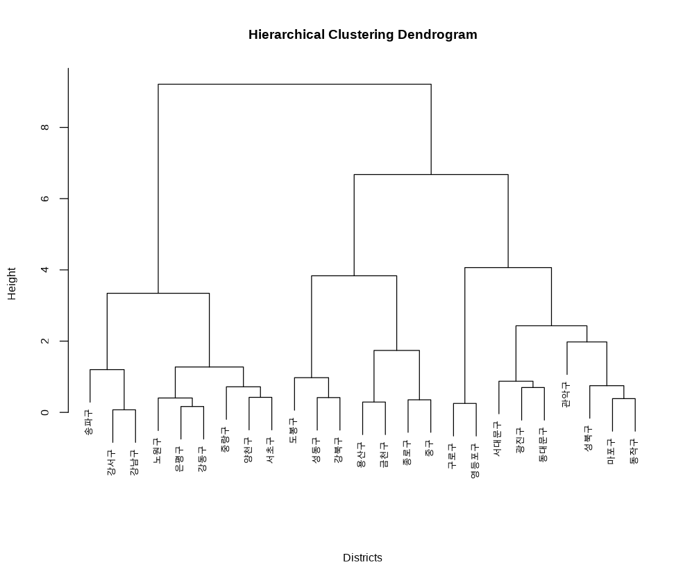

K-Means Clustering
Categorizes districts into predefined groups based on population data.
This study conducts a cluster analysis of Seoul’s administrative districts focusing on the dis- tribution and characteristics of registered foreign residents.
Using the latest data from the third quarter of 2024, the research employs K-means and hierarchical clustering methods to categorize the 25 districts into distinct groups based on variables such as population structure and the ratio of foreign residents.
Principal Component Analysis (PCA) is used to reduce dimensionality and enhance interpretability. The analysis identifies four clusters with unique demographic and mul- ticultural characteristics, ranging from areas with high foreign resident concentrations and strong multicultural infrastructure (e.g., Yongsan, Jongno) to regions with predominantly local popula- tions and minimal foreign influence (e.g., Eunpyeong, Gangbuk). The findings highlight significant regional disparities and provide insights into the factors driving these differences, such as economic stability, cultural diversity, and access to infrastructure.
This study offers practical implications for policymakers by suggesting tailored multicultural policies, resource allocation strategies, and urban development plans that align with the specific needs of each cluster. It also underscores the importance of integrating data-driven insights into the formulation of inclusive and sustainable multicultural policies. Future research directions include incorporating longitudinal and qualitative data to capture dynamic changes and deepen the understanding of Seoul’s multicultural landscape.
Categorizes districts into predefined groups based on population data.
Visualizes inter-district similarities and hierarchical relationships using dendrograms.
Four distinct clusters emerged, differentiated by foreign resident ratios, economic characteristics, and population distributions.
@misc{Eom2025Github,
author = {Sungjun Eom},
title = {A Cluster Analysis Study on Seoul’s Administrative Districts Focusing on Registered Foreign Residents},
url = {https://sungjuneom.github.io/projects/global-temp-analysis-prediction/},
note = {Accessed: 2025-01-16},
year = {2025}
}